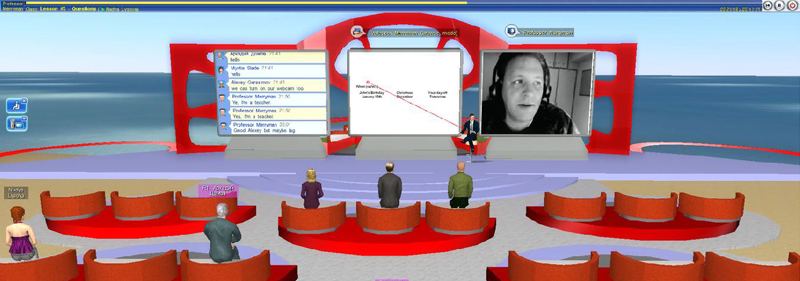
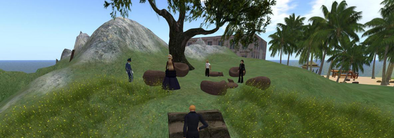

The Augmented Reality in Formal University Education (AR-FOR-EU) project will establish and deepen a strategic partnership for teaching Augmented Reality in Higher Education at scale on an undergraduate level. AR-FOR-EU will help improve quality of educational programs by creating a new and exciting offer in an area conducive to Europe’s global competitiveness, with technology uptake already showing positive effects in a variety of industrial fields. It will do so by collecting expertise at the European and international level to create a foundation for teaching Augmented Reality in formal education, preparing professionals for the industries of tomorrow and contributing to making European economies more research-driven, knowledge-based, and competitive.
In order to achieve this goal, AR-FOR-EU sets its objectives as (1) to establish a strategic partnership which will produce (2) an innovative course on the topic of Augmented Reality, based on surveying teaching practice of the scarce existing educational offers and industry needs and (3) a technology-based and pedagogically sound digital Open Educational Resources and an online version for a Massive Online Open Course platform aimed at opening up and fostering uptake of the course across Europe.
AR-FOR-EU impact will be strongest at the EU level, while also providing benefits to society and the economy on local, regional and national levels. Through intensive cross-border and inter-disciplinary cooperation, the project will trigger processes and produce results that are likely to become self-sustaining and develop further, such as a standards of excellence in Augmented Reality teaching and the Augmented Reality teaching community. The project will have impact on development of transversal skills among students, teachers and researchers, with a life-long value in the settings of continuously changing workplaces and societal challenges.
The consortium has a vision of an AR teaching community, supported by an online community portal with possibilities for the members and visitors for sharing experience, best practices, resources, and news. It will be a place for peer learning of AR teachers and teachers of related disciplines, for bottom-up activities, where, for example, the industry representatives could express their needs and teachers adapt their practices.
Jan 2016–Dec 2017: Active Learning Module for Emergency Management Professionals using VRIn this project, we will focus on how Virtual Reality technology could support cooperative learning within the field of Emergency management training, in a crossprofessional context. The simulated environment with game-based elements will provide an engaging learning experience and faclilitate reflection on problem-solving under critical conditions as well as reflection on team interaction and procedures in emergency settings. After roleplay sessions, the students will be able to discuss their experiences within the student group and with experts/teachers, in both co-located and distributed modes.
Dec 2015–Nov 2018: Wearable Experience for Knowledge Intensive Training (WEKIT)The project objectives are to build on multi-discipline research (e.g., human-centred methodology integrates cognitive models, ergonomics, understanding of worker’s well being) to accelerate how we identify, acquire and exploit skills valued by industry. Get high take-up by early adopters (e.g., in manufacturing). Augment training in situ with live expert guidance, a tacit learning experience and a re-enactment of the expert, in knowledge-intensive environments where effective decision making, often in new situations, has high impact on effectiveness in production. Bring learning content and technical documentation to life via task-sensitive Augmented Reality (AR). Make final products flexible for workplace integration via industry-standard repositories and toolkits.
Nov 2015–June 2016: Virtual Education for Norwegian Welfare technology
The main objective of the project is to develop a pilot virtual reality simulation of welfare technology. The major purposes of the simulation include training of welfare employees and demonstration of welfare technology for different target groups.
2011–2012: Cultural Awareness in Military Operations (CAMO)
Cultural Awareness in Military Operations (CAMO) is a research project led by the Norwegian Armed Forces in cooperation with NTNU and University in Oslo. The project has two goals: first – gaining first-hand experience of educational use (opportunities, applications, and limitations) of the 3D virtual worlds within the framework of military operations; and second – building internal expertise in terms of a larger effort in the future.
2009–Now: vAcedemia
This virtual world is designed and developed specially for educational purposes, and it has an integrated set of tools for a number of learning activities. The main original feature of vAcademia is 3D session recording, which allows to capture dynamically everything in a given location in the virtual world, including positions of the objects, appearance and movement of the avatars, contents on the interactive boards, text and voice chat messages. Recorded sessions are stored on the server and available for watching in a 3D or a 2D-preview format.
2010–2013 Enabling Creative Collaboration through Supportive Technologies (CoCreat)
Enabling Creative Collaboration through Supportive Technologies (CoCreat) is a project, supported by the European Commission under the Life Long Learning programme. The project identified a number of problems in the society (e.g. technological environments, learning landscapes (ecosystems) and interaction between different generations) and the evidence in research that there is a need for a range of new learning practices in complex and dynamic learning environments in order to tackle these problems. The aim of this project is to find out how to enhance creative collaboration by applying the theory of collaborative learning. The outcome of the project will be increased competence in acting and learning in complex and dynamic environments where collaboration and creative solutions of problems are required.

Virtual Research Arena (VRA) at the Virtual Campus of NTNU is a meeting place for researchers, students and public; a place for visualizing and promoting research projects. Virtual Research Arena was presented both virtually and in real life during the annual Norwegian Science Week festival in September 2010.

The First TARGET International Summer School on Technology Enhanced Learning, Serious Games and Collaborative Technologies was conducted in the Virtual Campus of NTNU in Second Life in the autumn 2010. The main aim of the TARGET project is to develop a new genre of technology-enhanced learning environment that supports rapid competence development, and the two domains of innovation and project management have been selected as pilot areas.
Virtual Campus of NTNU is a place for educational and social activities in a 3D environment; a source of information about the university. It is a joint project created in cooperation between the Program for learning with ICT (LIKT), NTNU Library (UBIT) and the Department of Computer and Information Science (IDI).

Travel in Europe (TiE) is a virtual world where young people and the curious can enjoy challenging and engaging travels through European heritage. It is a joint EU project created in cooperation between ELIOS Research Group, University of Genova, Italy, Program for learning with ICT (LIKT), Norwegian University of Science and Technology (NTNU) and other organizations.

Virtual City of Yoshkar-Ola (VCYO) – a multi-user virtual world that represents the central part of the real city in exact manner. It supports local social networks in a natural environment for meeting and communication. It is a research project with an open prototype created by Multimedial Systems Lab (http://www.mmlab.ru/) at the Volga State University of Technology, Russia. Few studies were performed in cooperation with Norwegian University of Science and Technology (NTNU) in 2008-2009.